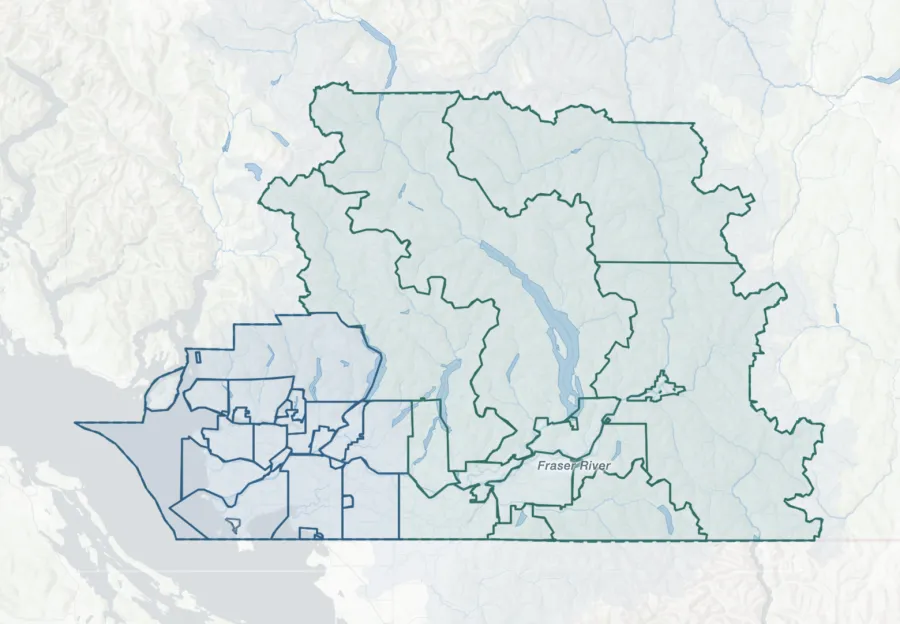
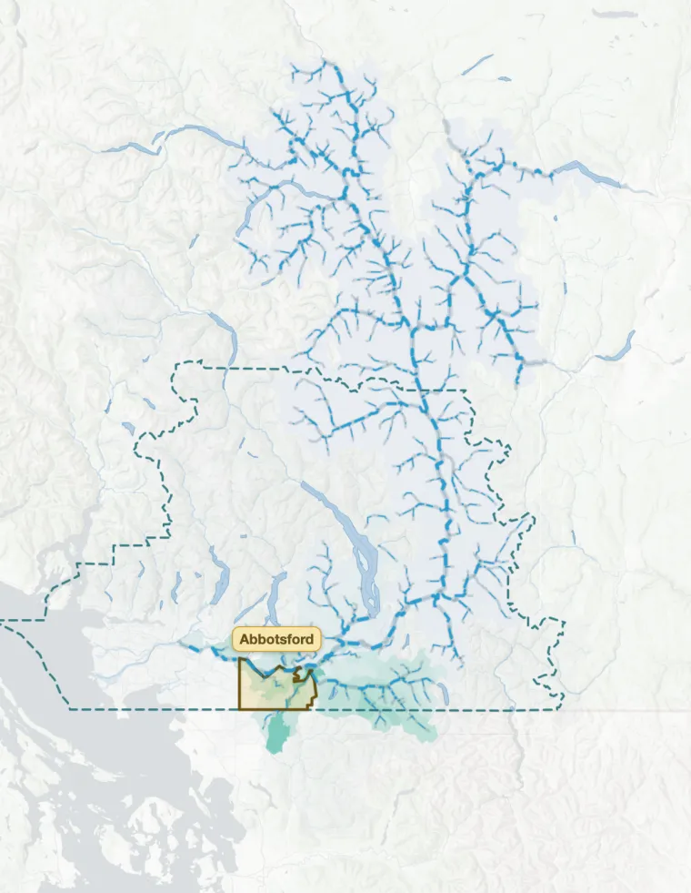
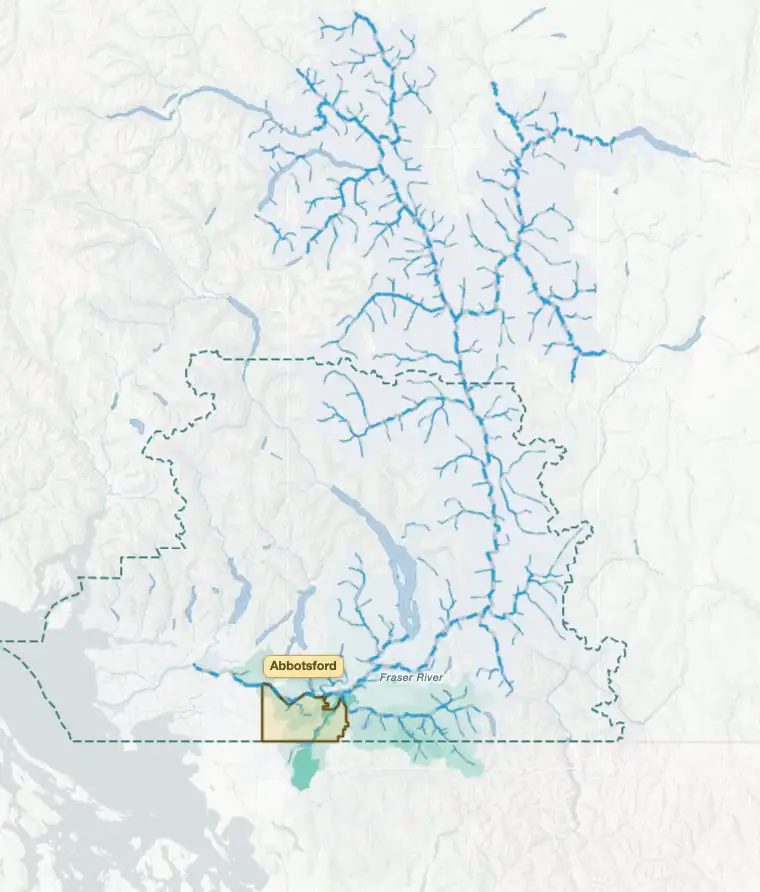
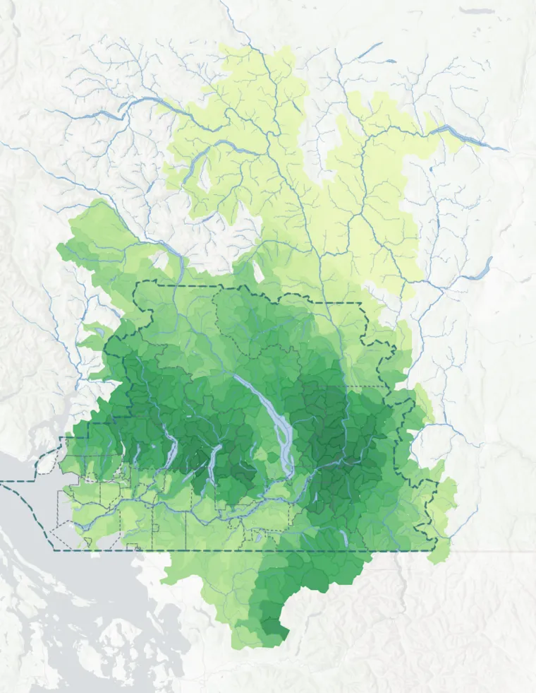
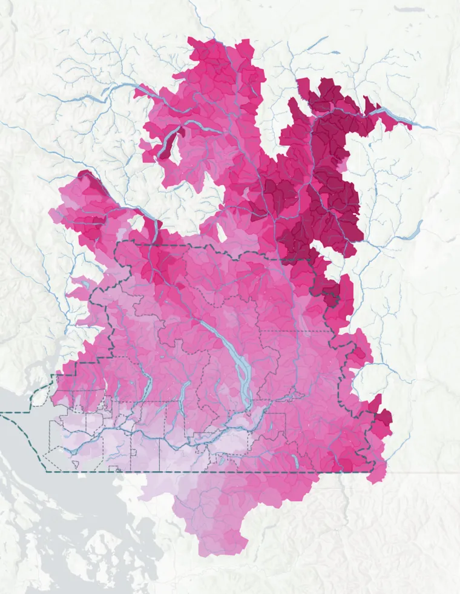
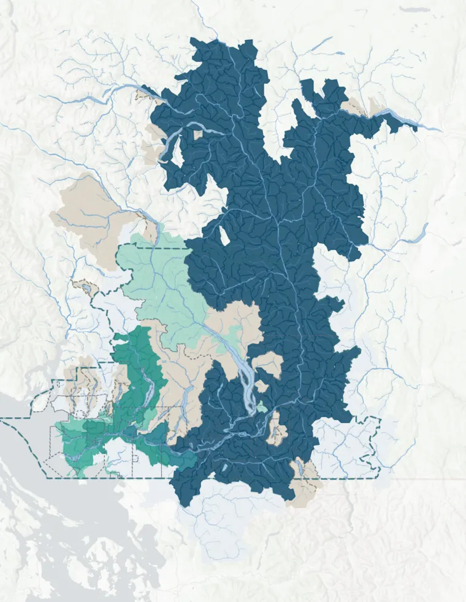
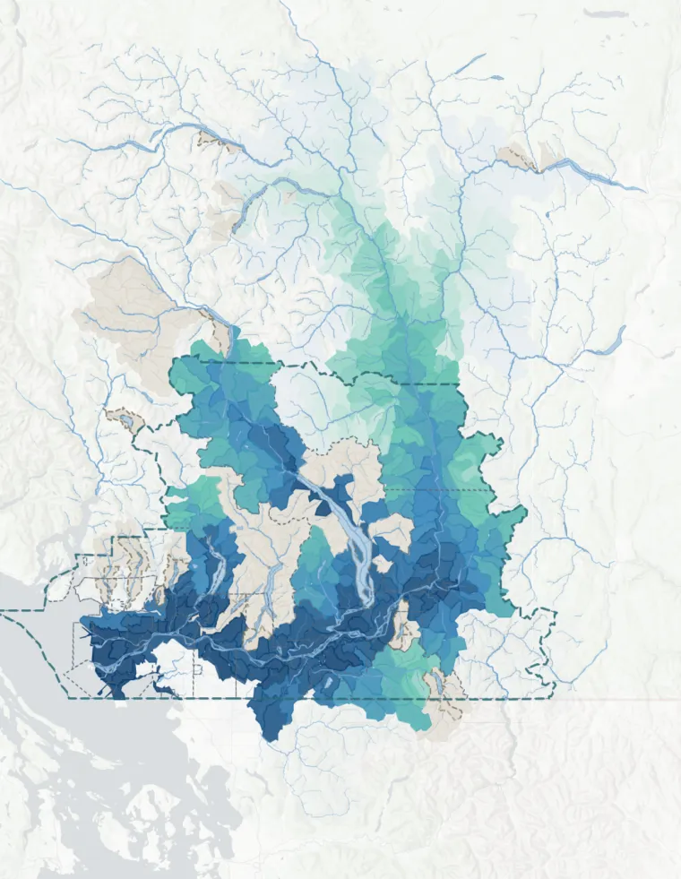
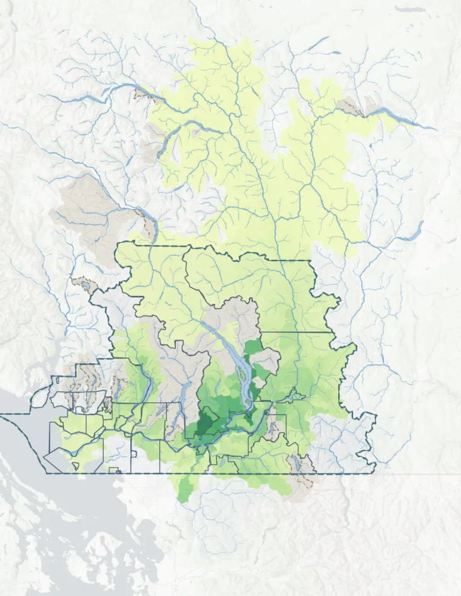
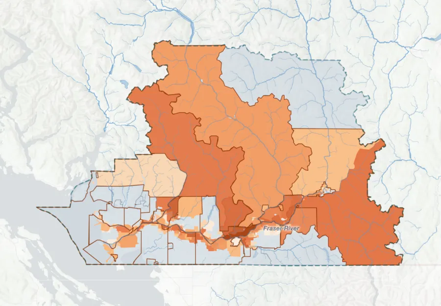

MFRE GP Showcase · 21 August 2026
A spatial analysis of the Lower Fraser
Opening this page on a desktop or laptop makes the map interactive. There you can select any community, switch between the layers and read the figures behind each one. This page walks through the same views as a fixed summary, so it stands on its own.
Scroll to begin
The problem
Extreme climate-driven events are placing growing pressure on communities across the Lower Fraser.
The November 2021 atmospheric river that flooded the Sumas Prairie is the rainfall scenario behind every figure on this page.
The response
Healthy upstream ecosystems provide natural flood protection by retaining and slowing water.
Forests, wetlands, shrubland and grassland absorb rainfall that would otherwise run off. That retention happens upstream, and the benefit is carried downstream to the communities those watersheds drain toward.
The question
National-scale research has established that these ecosystem services matter across Canada. This project brings the question to a regional scale for Metro Vancouver and the Fraser Valley: which upstream areas hold back the most runoff, which communities does that retention reach, and where is it shared between them.
View 1
The region's communities, across Metro Vancouver and the Fraser Valley. On a desktop, selecting one traces the water that reaches it.


Fraser Valley · City
View 1b
Two communities can draw on much of the same upstream land. Where they do, a land-use decision in one watershed carries to both.

Shared upstream contribution
Across the region the largest overlaps are Fraser Valley B and Hope (61%), Fraser Valley B and Kent (47%), and Hope and Kent (34%).
View 2
The same upstream areas read four ways: what they hold back, what their loss would cost, how many communities depend on them, and how far that contribution travels.
Runoff retained per km² of natural land, from cover, soil, slope and rainfall. This measures the land itself, whoever is downstream.

Cleared of natural cover, less rainfall is absorbed and more of the same storm runs off. Darker areas gain the most as a share of the runoff they already produce, so this ranks differently from retention.

How many communities each area's retention reaches. The areas serving many are the shared assets.

Flow distance to the nearest community an area serves. Contribution is discounted on a 20 km half-life, so it fades as the water travels.

View 3
The two sides of one ledger. Supply is the retention upstream weighted by the exposure it reaches. Demand is the exposed land downstream that retention serves.


across 24 communities
The tool ranks areas of natural land by the storm runoff they hold back upstream of flood-exposed land, and shows where that contribution is shared between communities. Use it to screen and prioritise at a regional scale.
It does not estimate flood risk avoided at any location, and maps no flood extent or depth. Absolute volumes shift with the rainfall scenario, while the ranking between areas holds far steadier, and that pattern is what the tool is built to show. Site-specific decisions need detailed hydraulic modelling.
Learn more
On a desktop or laptop, this address loads the interactive version, where every community and every layer can be explored directly.
qhw-isaac.github.io/lower-fraser-flood-attenuation/